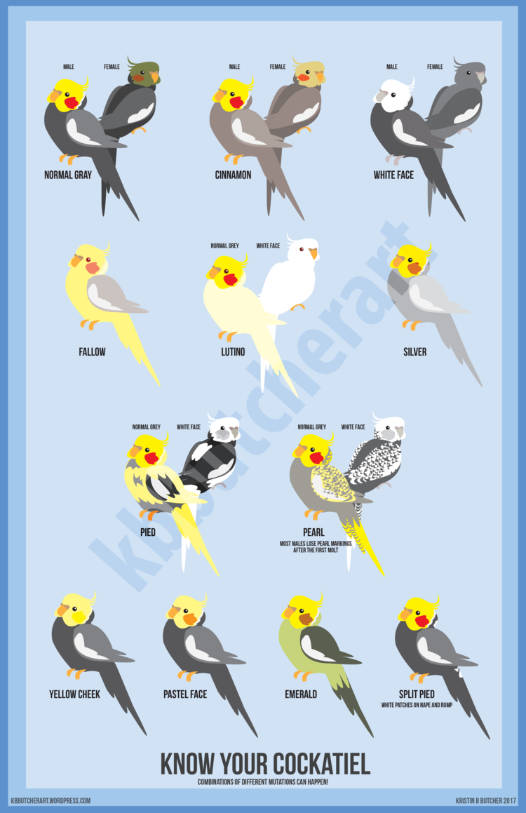

- Home
- Types of Cockatiels
- Cockatiel Video
- My Cockatiels
- Caring for Cockatiels
The wild cockatiel has a gray body with a yellow face and crest and orange cheek patch.
The colors on the face are brighter and more vivid in the male.
The female has bars on the underside of the tail feathers.
Bred in captivity for the pet trade, several color mutations developed over the years.
The most common variations include:
Albino: Lack of feather pigmentation
Lutino: White bird with yellow mask, orange cheeks, and red eyes
Pied: Typical wild cockatiel colors replaced with a yellow
or off-white color
Pearl: Spotting of various colors that creates tiny "pearls"
along its feathers
Cinnamon: Gray feathers with a brown or warm tan color
Silver: Recessive silver and dominant silver cockatiel mutation;
recessives have cool gray feathers and red eyes;
dominants have a warmer gray tone and dark eyes
